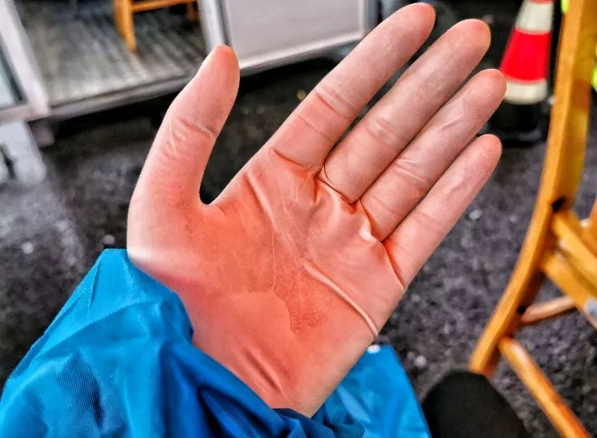

为家乡医院筹口罩
原文链接 备份链接 ********** *****现在，志愿者们已经对各类口罩如数家珍。1月底，一家东莞工厂表示有一批口罩。“那是工业级别的N95，不能给医生用。”程雨拒绝了。“不能让热心被利用，也不能给医院制造麻烦。”她说。***** …


- 疫 情 之 下 -
尽管寒风冷冽，病毒无情，但正是这些艰苦的条件，让我们志愿者们的心紧紧依靠在一起。
”
所有人，身份证出示一下！”
我站在xx高速出口的下风口，大幅度晃动着手里的蓝色文件夹，示意每一辆下高速的车减速到我跟前。然后，我一边大声询问他们的姓名、手机号等基本信息，一边飞快记下对方嘴里冒出来的所有字符。
一阵大风呼啦啦穿过耳膜，天公不作美，开始下雨了。我抬头望了望远处，即使5小时一秒不停记录着，这条车队长龙依然不见尽头。
故事时间：2020.2
故事地点：中国
1
为什么要在春运返城的最高峰报名做一名志愿者，这问题我至今答不上来。也许是工作群里那@所有人的一问恰好被我瞅到了，而我又恰好心情极好地玩着手机，顺手就第一时间回了一句：
“我报名！”
由于工作的特殊性，加上办公室不放人，其他志愿者可以专心投入到疫情防护工作中去，而我要一边兼顾着财务的工作，一边每天在防护前线执勤6-8小时。用领导的话说：“工资总要有人发嘛！”
上前线的第一天，我们4名志愿者在当地疾控中心接受岗前培训，主要讲述了一些自身防护意识等注意事项。培训结束后，我就匆匆赶到了XX收费站出口，由于这个站的上一任组长刚结束任期，区里任命我接任了这个职位。
按照区里培训时的说法：咱们物资都在卡口，从头到脚，帽子、护目镜、口罩、防护衣、手套，一人五件套，一件不缺。我们被反复叮嘱，每位志愿者必须穿戴整齐，保护好自身安全。
然而，当我下了车，眼前看到的是一群忙得团团转“赤裸裸”的志愿者们——黄色交通管制马甲，医用外科口罩，橡胶手套。
这也太简陋了吧！我心想。穿着自己的衣服，什么隔离措施都没有，只戴着口罩手套就上了？
带着疑问，我找到了卡口路政的负责人W队长。
“为什么咱们的志愿者只有口罩和手套，每天接触这么多车辆人员，这不是玩命吗？！”
“唉！陈组长，你这是刚来不知道啊！”W队长重重叹了口气，“物资实在紧缺，现在全区所有防护衣和N95口罩都优先派送给发热门诊，咱们这儿有口罩和手套就已经很不错了，前几天连口罩都不够，部分志愿者都是自备口罩来的呢！”
防护物资不全，志愿者等于直接暴露在病毒感染的危险之中，自身安全严重得不到保障，但每天车辆这么多，收费站又不能关，理了理头绪，我迅速得出结论：目前头等大事就是——搞物资！
情况紧急，我迅速致电了区团委领导，汇报了卡口当前的危险情况。不出意外，区里的反应与W队长一样：物资紧缺，分配不过来，其他收费站情况与我们大同小异，如有多余一定第一时间配送，在此之前，需要我们自行克服困难。
言外之意，短时间就得靠我们自己了。
为了切实解决困境，尽最快速度让我们收费站的志愿者们穿上防护服，我向区里要了距离我们卡口较近的两个卫生院负责人电话。
此时已经夜里8点多，我怀着忐忑的心情，经过和院方反复沟通，终于与三方达成一致——今后由两个医院，每日轮流，按时派送我们收费站志愿者同志们的全套物资，并出一名医护人员协助我们的体温测量与物资发放工作。
第二日，每位上岗的志愿者都穿上了隔离服，戴上了护目镜，我的心终于踏实了。
2
随着疫情发展，全国各地的每日确诊人数呈几何数式增长，我们收费站的交通管制也越来越严，区里下发的重灾疫区名单也在每日不断更新，有时甚至一天更新两次——从一开始的湖北全省、浙江温州两地，逐渐扩展到今日的宁波、合肥、阜阳等17个接连确诊人数全都破百，沦为重灾疫区的地方。
管制愈加严格，执行难度也逐渐加大，我们越来越容易遇到不愿被劝返的外地市民们。
“你好，车上所有人，身份证出示一下！”
例行公事，我们要求车上人员出示身份证件，核实并记录每一辆下高速的车辆和人员信息。
“车上几个人？”
“就我和我老婆！”驾驶员咧着大门牙，对着我比了个手势数字。
“口罩戴好！哪里来的？”
“噢噢，好的！我们从江苏盐城来。”
“驾驶员手机号留一下！”
“13XXXXXXXXX”
“没有问题，他俩都是本地的，过！”
旁边一位路政的同志检查完身份信息，得出结论。
得到批准，车子缓缓启动，趁下一辆车开到跟前的空隙，我甩一甩胳膊，活动下5小时僵硬酸疼的筋骨。
突然，我看到后车窗有什么影子晃动。细思恐极，我马上向前喊：“等等！前面那辆车停车！”
谁知它一脚油门，使了劲往前冲，誓要冲破我们卡口的防线！
绝不能让它跑了！情况紧急，路政的兄弟们纷纷放下手里的活儿，一路奔跑，前边负责掉头车辆管理的同志，从前方拦住了那辆车的去向。车窗摇下来，后边确实坐着一人，身份核实，湖北的。
“车子靠边停。”路政的同志指挥车辆往边上开。
情势所逼，东窗事发，驾驶员叹了口气，不情不愿地把车挪到一边儿，重新接受检查。不久后，这辆车按规定被劝返，掉头重新上了高速，顺利拦下。
成功抓住漏网之鱼，我们终于松了口气。对待之后的车辆检查，也更加小心翼翼。
3
天气转凉，淅淅沥沥下起了雨，给原本就行进缓慢的车辆疏导工作，更上升了一个难度。交警的领导给我们每一位志愿者分发了雨衣。棉袄外套、隔离服加雨衣，常常让我们身体热得冒汗，但手指却冰冰冷冷，几乎笔也很难握住。
由于附近的城市高速口管制十分严格，许多车辆下不了高速，只能拐到我们口子。几小时不停不歇是常态，下了雨记录更加困难。为了加快车队行进速度，让市民们早点回家，我们走出了雨棚，分三条车道，开始拿着记录本走到车前主动询问、登记信息。
“你好，车上所有人，身份证出示一下。”
我走到一辆车前，由于雨声渐渐大，不由提高了音量。
我们原先是一人登记车辆人员信息、一人查看身份证的“1+1“模式。由于目前分三条车道，人手有限，我只能一人完成收集、审核和登记的工作。
为了方便记录，我左手拿着文件夹，右手拿着笔。接身份证时，我把文件夹抵在胸口，右手小拇指夹着笔，用食指和中指接过了4张身份证。
雨越下越大，护目镜里边儿布满了雾气，外边儿一层的雨珠也越积越多。我用袖口擦了擦护目镜外层的镜片，视野稍微短暂地清晰了一些。
“小同志，你看你这口罩外边儿都湿透了！这口罩湿了就没有用了，我这儿还有好多，你快拿几个去换了吧！”
僵硬的记录完最后几个字儿，闻声，我抬头，映入眼帘的是汽车前排一对中年夫妇担忧的眼神。
“没事儿没事儿，等这些登记完儿我们就休息了！谢谢叔叔阿姨！”
怎么能拿市民东西呢，现在正是全区物资都紧缺的时候。
“快拿着吧，我孩子也在高速口做志愿，这么长的车队哪有登记完的时候啊！而且这下雨降温的天气，你们更辛苦！我都知道！快拿去换了吧！”

盛情难却，我只好伸出了手，他们连忙将口罩的袋子塞进了我手心，生怕我再反悔似的。若我不收，他们的车就不开，后边的进度只怕更慢了。
“好嘞！你收了我们这心里就舒坦了！小同志辛苦啦！”我向他们挥了挥手，一边攥紧了手里的袋子，车子缓缓开进了雨幕中。
疫情当下，更知人情冷暖。疫情还未得到控制，志愿还在继续。每日换班下来吃饭的间隙，总能听到“XX收费站遇到后备箱藏武汉人”“XX收费站又有驾驶员勇闯关口”等这类匪夷所思的消息，令人担忧愤怒。
但另一边，我们也会遇到热心市民送温暖、市领导前来慰问的感人事件，区里和单位都为我们做了很多次报道。尽管我们志愿来前线并不是为了被表扬，但这些都令我们更坚定了志愿者的工作。
尽管寒风冷冽，病毒无情，但正是这些艰苦的条件，让我们志愿者们的心紧紧依靠在一起。
手脚冰凉了，就一起跳一跳广场舞；遇到没听过的地名儿了，就举个当地特产的例子相互乐呵乐呵。大家一起说说笑笑，时间也过得快了起来。真心希望疫情早日得到控制，待到山花烂漫时，再与我们卡口的志愿者们，把酒言欢今日情。
但在今日，此时此刻，我们坚定：只要疫情不散，家乡人的安全，我们来守护。
家乡的城门，我们来守！
-END-
图文 | CC，青年作者。
“我故”故事练习生培养计划，详情请戳：

About us
主编：鹿｜本期编辑：鹿
Contact us
投稿/商务合作/咨询
微信后台留言 or 邮箱：wmsygsdr@163.com
**我们是有故事的人｜华中科技大学出版社官方故事平台**
原文链接 备份链接 ********** *****现在，志愿者们已经对各类口罩如数家珍。1月底，一家东莞工厂表示有一批口罩。“那是工业级别的N95，不能给医生用。”程雨拒绝了。“不能让热心被利用，也不能给医院制造麻烦。”她说。***** …
原文链接 备份链接 数据来源：腾讯新冠肺炎疫情实时追踪 截至2月3日早上7时， 全国新冠肺炎确诊个案16615例， 武汉确诊个案5142例。 根据1月31日湖北省疫情新闻发布会， 截至30日24时， 武汉地区共有6万余名医务工作者参与救 …
原文链接 备份链接 目前，几个粉丝站的物资除了少量还在路上，大部分已经送到需要的人手里，然而尽管如此，全国各地的物资缺口仍然很大。 文 | 王超 高逸佳 薛雨霏 编辑 | 沈小山 “这些天大家也真的很拼了，晚上核对整理信息有时三四点才睡， …
原文链接 备份链接 武汉“封城”后公共交通停运，自1月24日开始，路上开始出现民间自助形式的车队。私家车主轮班，车队昼夜不停，每天接送医护人员、运输医疗物资，每送一趟要用75%酒精浓度的消毒液喷洒一遍车辆，油钱、防护口罩、消毒液都自掏腰 …
原文链接 备份链接 武汉的一群车队志愿者，被当地人称作“摆渡人”。粗略估计，这一群体已超过千人。这群志愿者中，最活跃的大部分是90后，最小的是1998年出生的，他们用自己的勇气和热情化解了部分人员暂时的出行难题。然而，在病毒面前，志愿者 …